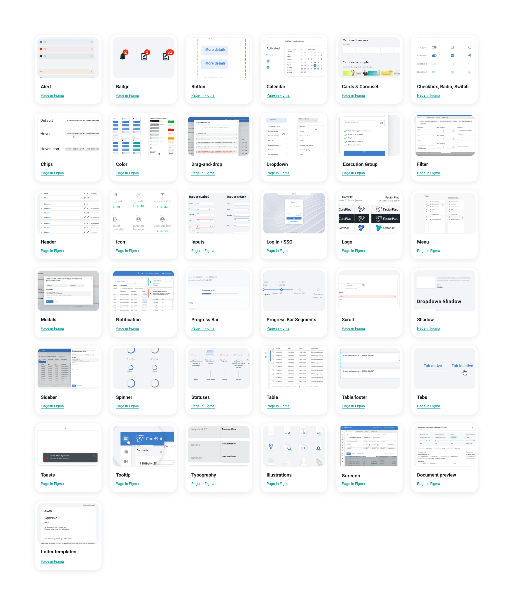
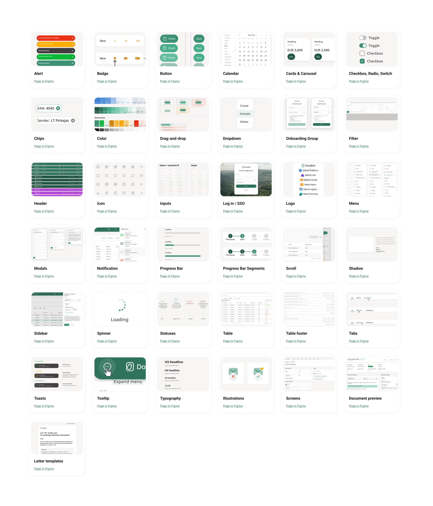

01 · Product layer
Give the retained component architecture a product-specific visual language
I retained each component’s structure and purpose while redesigning its presentation: the logo, palette, typography, states, and composition rules.
Trade-off: stable technical connections remained intact while the product gained an independent visual system.

